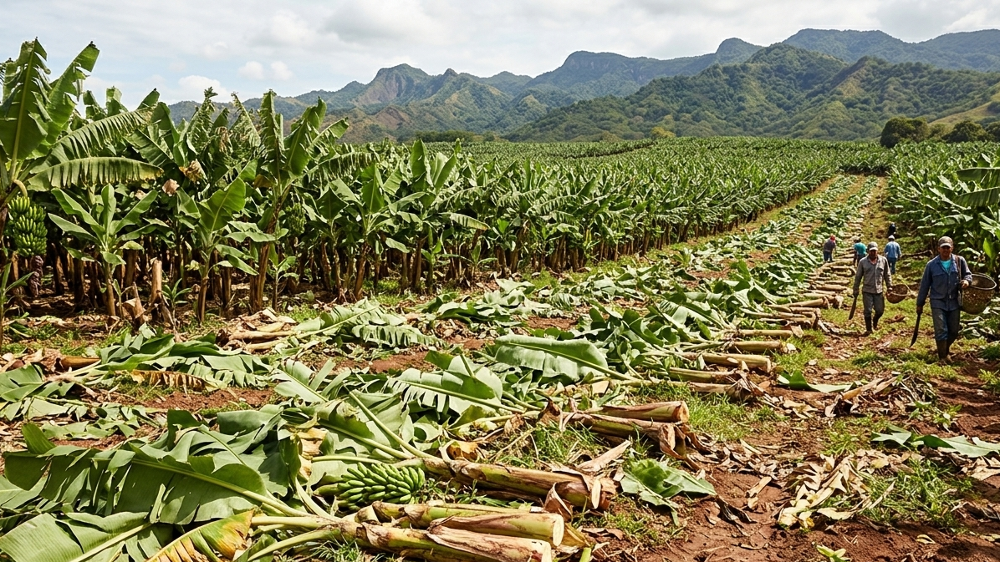
📉 El Problema: El residuo olvidado
En Venezuela existen unas 83,500 hectáreas de cultivo de musáceas. Tras cada cosecha, entre 130 y 160 millones de plantas quedan en el campo. Al pudrirse, liberan metano.
Bolsas y cuadernos artesanales hechos de fibra de vástago de banano.
Ver Catálogo
En Venezuela existen unas 83,500 hectáreas de cultivo de musáceas. Tras cada cosecha, entre 130 y 160 millones de plantas quedan en el campo. Al pudrirse, liberan metano.
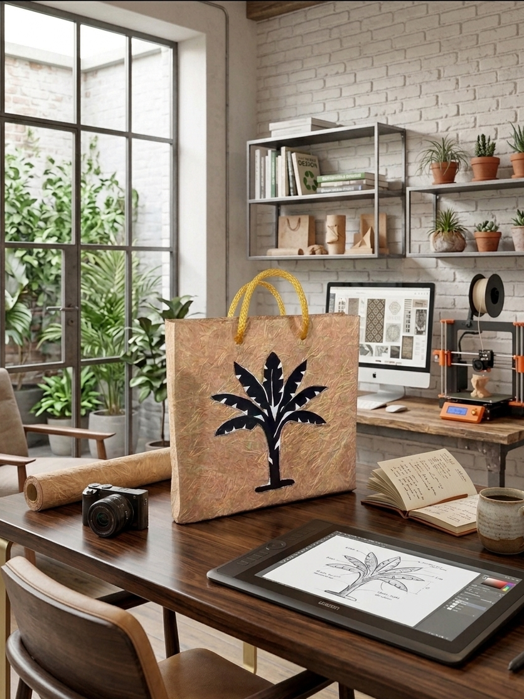
Extraemos 400 kg de celulosa por cada tonelada de vástago. Nuestro proceso circular evita la deforestación: por cada tonelada de papel Vastech, salvamos 17 árboles adultos y eliminamos la huella de metano.
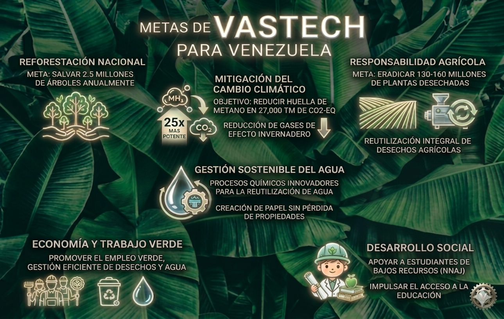
Nuestra visión para el 2026 es cubrir el 60% de la demanda nacional de papel, convirtiendo desechos en industria verde.
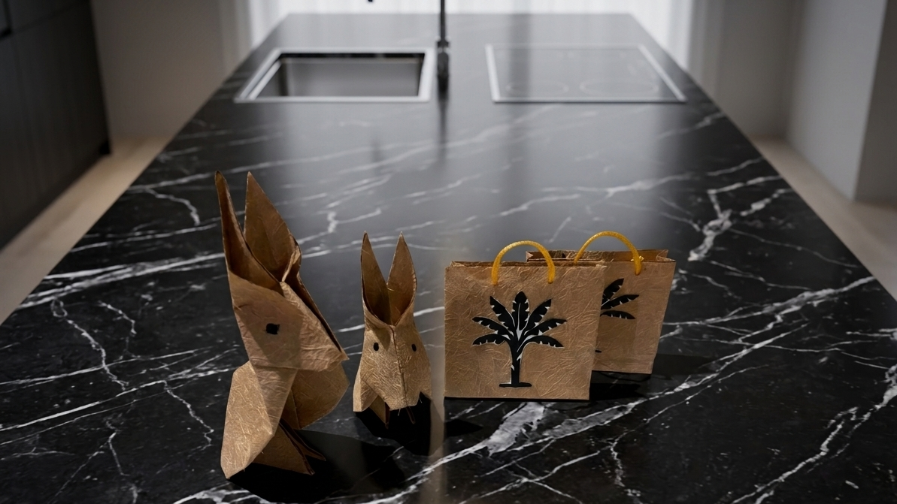
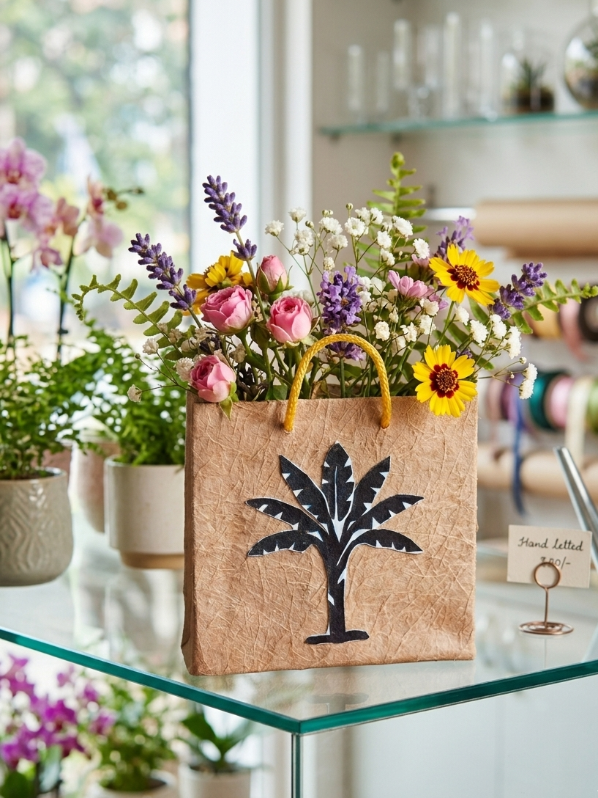
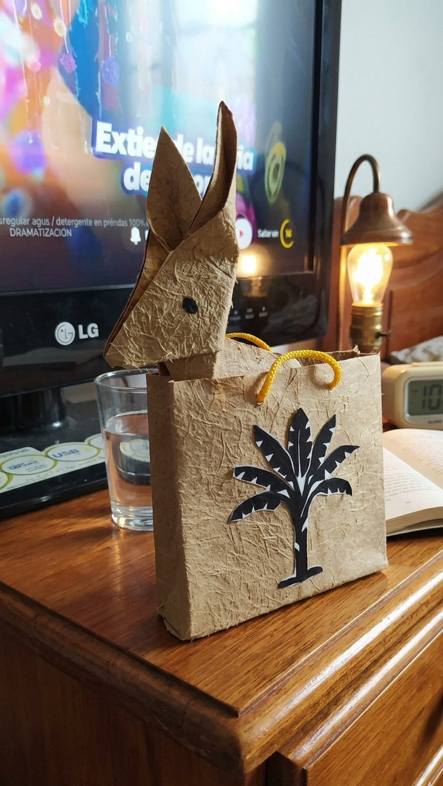
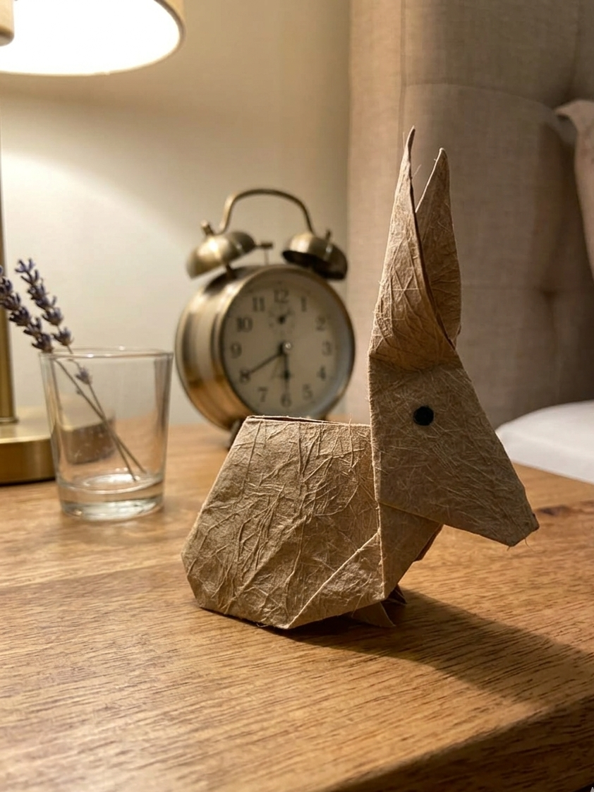
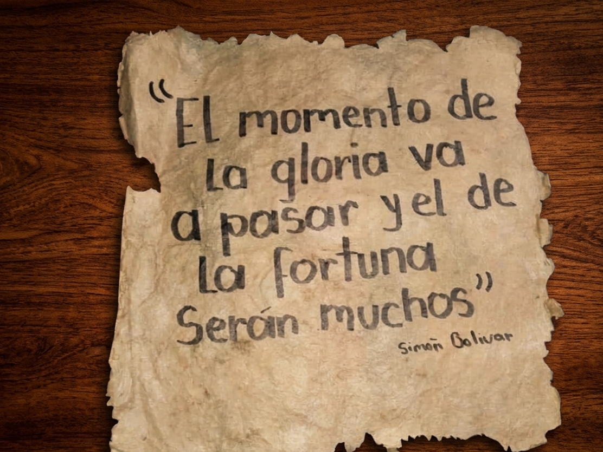
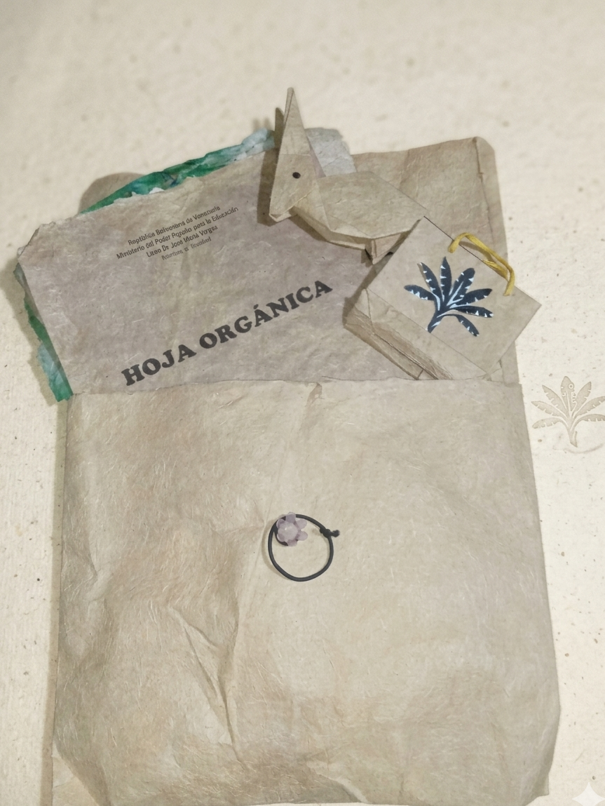
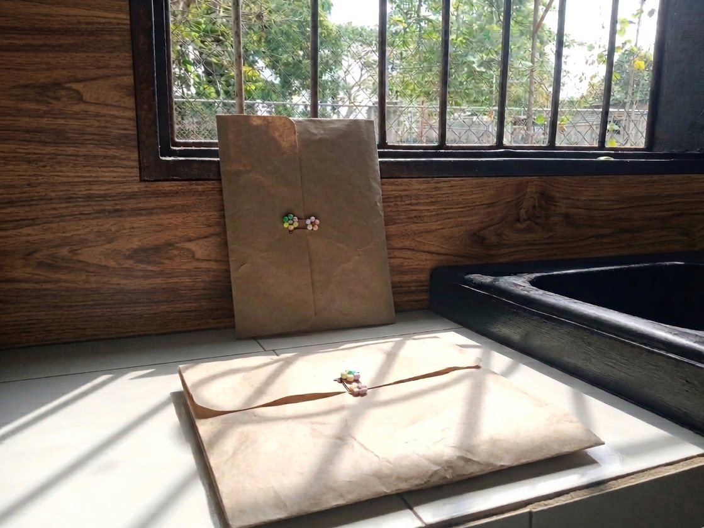
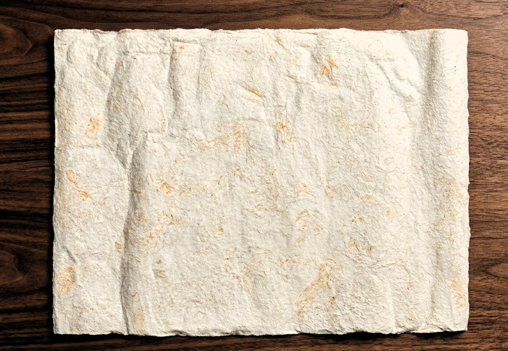